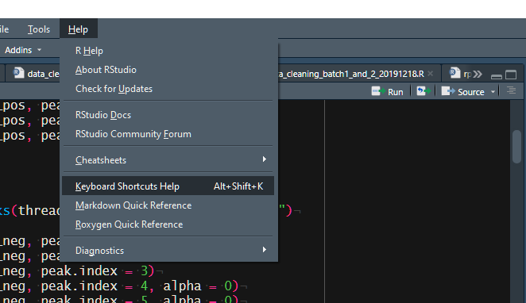

使用pkgdown包可以为自己的R包创建说明网站,从而更加方便别人对自己包的立即以及自己对包的管理.
参考网址如下:
https://pkgdown.r-lib.org/index.html
# Install release version from CRAN
install.packages("pkgdown")
# Install development version from GitHub
devtools::install_github("r-lib/pkgdown")在包的根目录下运行下列代码来创建网站.
pkgdown::build_site()主页的内容来自于README.md或者index.md.
pkgdown自动的将vignettes文件夹中的所有的md文件转变为aritcles.
在根目录下创建NEWS.md文件,然后就会在Changelog页面下显示.
最简单的方式是在github网页的setting中,直接将docs选为github pages.
